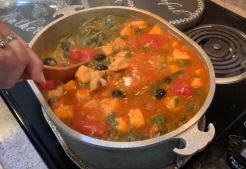
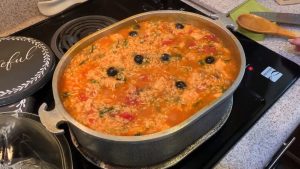
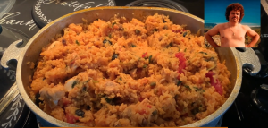

An important part of what makes cultures different from each other besides the people, practices, and language is the food. Every culture around the world has many dishes that can be found unique to a culture or there is a special way that a culture prepares food that can only be found in that specific culture. Due to its unique origin, Gandule rice can be linked to the cultures of Puerto Rico and Hawaii. Throughout my life, I always remembered my grandmother making one specific Puerto Rican dish, this dish of course being Gandule rice. In this video project, I was able to film my grandma making Gandule rice using a family recipe that has been passed down through the women of my family. In the end, I was able to connect more with my Puerto Rican heritage and culture by learning how to make this dish with the help of my grandma.
Making a video seemed easy at first but what I didn’t know was how much time and patience it took to film the cooking process and how much time it took to edit all of my footage. Since there was a lot of prep and steps it took to make Gandule rice, I would occasionally forget to pull out my phone to record footage of my grandma cooking. Luckily, I would remember the last minute and get footage of the last piece of chicken being cut or the last can of tomatoes being poured. After acquiring all of my footage, I had to download each video to my laptop, find an easy-to-use video/movie maker, and siphon through each video to cut them down to where I wanted the clip to start and stop. Doing this took a lot of time, but with much determination, I was able to finish my video and end up with what I think is a pretty good YouTube video.
Youtube link: Gandule Rice.